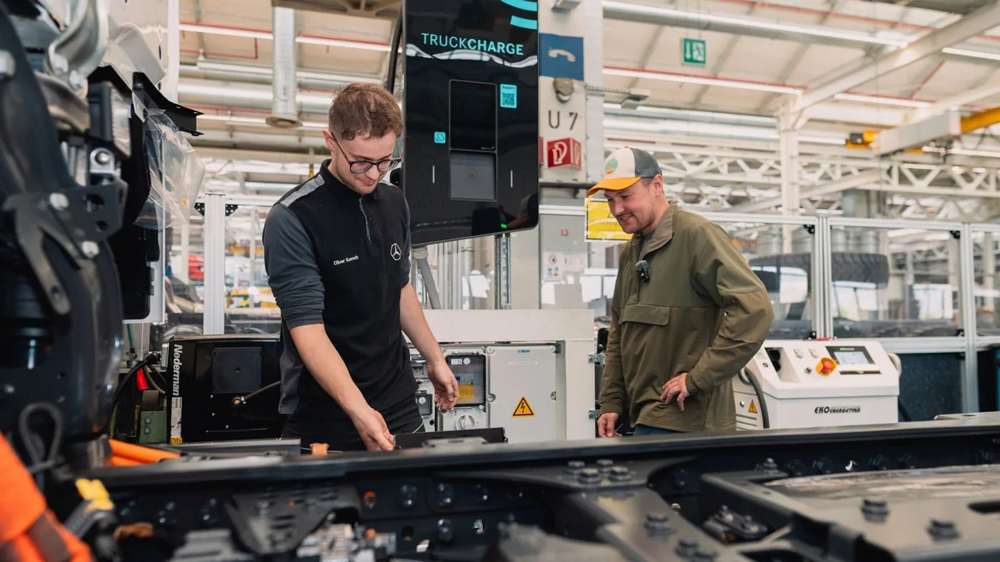

Daimler Truck confirmó en su comunicación de IAA del 13 de septiembre de 2026 que el proyecto de Tobias Wagner, conocido como Elektrotrucker, tendrá a Hannover como punto de partida. La propuesta busca recorrer unos 45.000 kilómetros y alrededor de 30 países con un Mercedes-Benz eActros 600 especialmente adaptado.
El objetivo anunciado incluye un máximo de 80 paradas de carga. Se trata de una meta de expedición, no de un resultado alcanzado. Esta nota no afirma que el recorrido haya sido completado ni que el camión ya haya atravesado los países previstos.
El proyecto había sido presentado meses antes. La novedad de la semana es su actualización en el programa de IAA; las imágenes de preparación son material de contexto y no prueban que una etapa del viaje haya ocurrido.
Una expedición puede mostrar preguntas difíciles de ver en una feria
Análisis de Zabala Repuestos. Un recorrido extenso puede hacer visibles situaciones que una exhibición no reproduce: cambios de plan, coordinación de asistencia y acceso a instalaciones. Para el lector, lo interesante será observar cómo se documentan esas situaciones y qué respuestas se encuentran.
El valor de un proyecto así no depende solamente de llegar a destino. También puede estar en explicar qué condiciones facilitaron el viaje y cuáles exigieron preparación adicional. Esa información permite distinguir una experiencia reproducible de una solución excepcional organizada para la expedición.
El número de paradas necesita una definición clara
Al seguir un objetivo de carga, conviene conocer cómo se contabilizan las detenciones y qué actividades incluye cada etapa. Una cifra final sin metodología no permite reconstruir la experiencia. El registro debería ayudar a entender tanto el recorrido como la organización necesaria para realizarlo.
También interesa diferenciar carga, descanso y otras detenciones. Pueden coincidir o responder a motivos distintos. Para un transportista que quiera extraer aprendizajes, comprender esa secuencia es más útil que comparar únicamente un número de paradas con su rutina habitual.

Una unidad adaptada no equivale a cualquier camión de flota
Para interpretar los resultados será necesario conocer la configuración utilizada y el trabajo realizado. Una expedición y un servicio de carga tienen objetivos diferentes. Compararlos sin explicar esas diferencias podría generar expectativas que el material del viaje no permite sostener.
La flota puede aprovechar la experiencia para formular preguntas sobre accesos, energía y atención, pero debería evaluarlas sobre su propia tarea. Un recorrido exitoso no reemplaza una prueba con la carga, los horarios y las condiciones comerciales del operador.
La preparación documental también cuenta
En un proyecto complejo, identificar el vehículo y sus equipos ayuda a coordinar consultas técnicas. El historial debe permitir saber qué está instalado y qué intervenciones se realizaron. Esa organización es útil tanto en una expedición como en una unidad que trabaja lejos de su taller habitual.
El plan de asistencia merece la misma atención que el itinerario. Conviene saber quién recibe una incidencia y cómo se comparte la información necesaria. Un canal definido evita que la búsqueda de ayuda dependa de contactos improvisados cuando aparece una dificultad.
Qué seguir en las próximas actualizaciones
- Etapas efectivamente realizadas y fechas de cada recorrido.
- Configuración del vehículo y condiciones de uso informadas.
- Instalaciones utilizadas y necesidades de preparación previa.
- Incidencias, cambios de itinerario y respuestas organizadas.
- Diferencias entre el plan inicial y los resultados documentados.
Estos puntos permiten seguir el proyecto con interés sin convertir una aspiración en una prueba concluida. También ayudan a valorar una comunicación transparente, capaz de mostrar dificultades además de imágenes atractivas del recorrido.
Una mirada desde Argentina
El anuncio no confirma una etapa argentina ni una disponibilidad local del vehículo adaptado. Para el transporte nacional, el interés estará en los aprendizajes que puedan explicarse y contrastarse con condiciones propias.
La vuelta al mundo plantea una historia atractiva para seguir. Su aporte técnico dependerá de la información que deje: no solo cuántos kilómetros recorrió, sino cómo pudo hacerlo y qué límites encontró. Esa será la diferencia entre una aventura visible y una experiencia útil para discutir el futuro del camión.